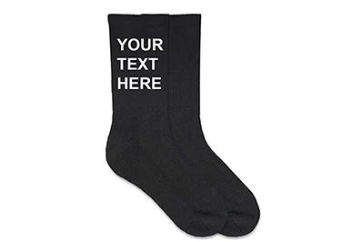
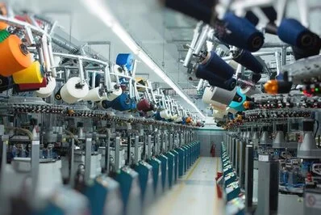

Ons aanbod
Zomersokken
Sokken uit de zomercollectie zijn ideaal om in zomerse sferen te dragen. Ze zijn kort en bieden voldoende verluchting. Ze zijn te verkrijgen in verschillende kleurrijke patronen en voor de minimalisten ook in verschillende effen kleuren!
Wintersokken
Naast een collectie zomersokken bieden wij ook een collectie wintersokken aan. Deze sokken kunnen de winterse temperaturen zonder probleem aan. Ze zijn langer dan zomersokken en in even veel kleuren te verkrijgen!
Sportsokken
Ons ruime aanbod beschikt ook over een collectie sportsokken. Deze sokken zijn speciaal ontworpen om voor voldoende bedekking te zorgen om blaren of andere kwalen te voorkomen. Hiernaast bieden ze ook voldoende ademruimte voor de voet zodat u nooit last zal hebben van een vervelend gevoel tijdens een sportactiviteit.
Personalisatie
Onze sokken zijn tevens ook volledig personaliseerbaar. U kan zowel afbeeldingen als tekst laten printen. U kan ook kiezen om dit te laten printen in vorm van een patroon, of eenmalig op een plaats naar keuze. Gepersonaliseerde sokken zijn een perfect cadeau. Het geeft ook een extra touch aan je outfit.
Over ons
Dit project is tot stand gebracht door mijzelf, Arne Cools. Ik heb voor dit project gekozen omdat het belangrijk is om op je juiste gelegenheid de juiste sokken te dragen. Ook geloof ik erin dat het dragen van bepaalde sokken vaak een herinnering terug kan roepen. Naast het emotionele aspect is het ook belangrijk voor je lichaam om tijdens het sporten aangepaste sokken te dragen. Onze fabrieken zijn daarom dan ook voorzien van de beste technologie om optimaal comfort aan onze klanten te kunnen garanderen.
